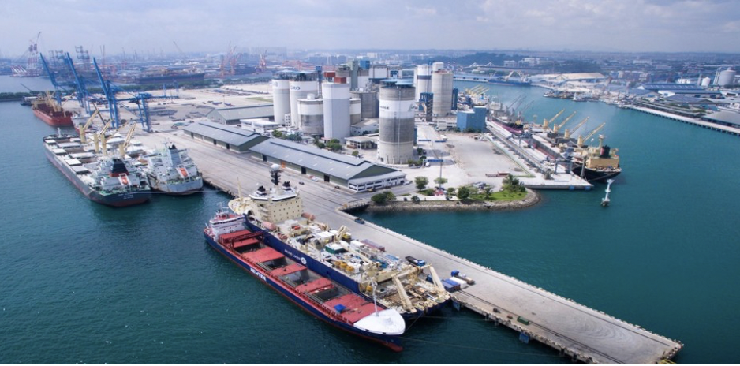

Projects

Hierarchical Energy Management System for Microgrid Operations
Cost/emission reduction using Python-based MILP optimization with ESS and solar PV.
Cost/emission reduction using Python-based MILP optimization with ESS and solar PV.

Self-Guided Inductive Vehicle with Embedded Control Systems
Autonomous inductive line-following vehicle using an Atmega16 microcontroller with PD control and custom PCBs.
Autonomous inductive line-following vehicle using an Atmega16 microcontroller with PD control and custom PCBs.